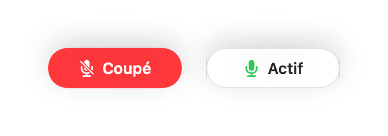
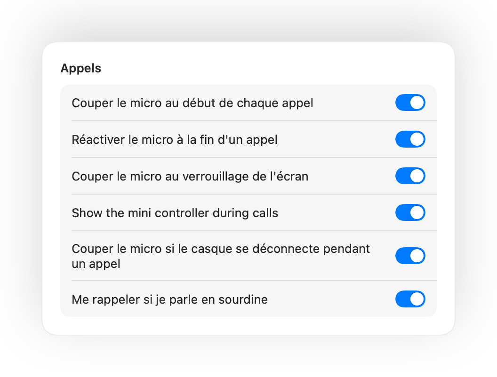
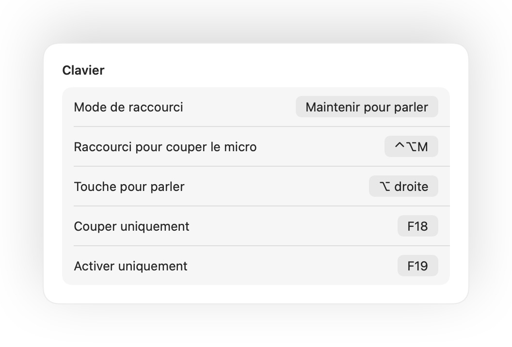

Appuyez sur vos AirPods.
Pendant un appel, appuyez sur la tige. Muffle coupe directement le micro : Meet, Zoom, Teams et toutes les autres apps n'entendent rien.

Muffle pour Mac
Appuyez sur vos AirPods ou utilisez un raccourci clavier. Muffle coupe directement le micro au niveau matériel : Google Meet, Zoom, Teams, Slack et vos autres apps ne reçoivent plus aucun son.
Essai gratuit de 3 jours. Puis un achat unique, sans abonnement. Pour macOS 14 Sonoma et versions ultérieures.

Muffle coupe le micro directement au niveau matériel, peu importe l'app, le navigateur ou l'onglet que vous utilisez en réunion.
Pendant un appel, appuyez sur la tige. Muffle coupe directement le micro : Meet, Zoom, Teams et toutes les autres apps n'entendent rien.
Un raccourci pour chaque app, même quand l'appel est dans un onglet en arrière-plan. Maintenez-le pour parler, ou passez en maintien pour parler.
Muffle reconnaît votre voix et vous prévient, avant que vous n'expliquiez toute votre idée dans le vide.

Un petit bouton flottant affiche l'état de votre micro et le coupe en un clic. Vert pour actif, rouge pour coupé.

Si vous commencez à parler alors que votre micro est coupé, Muffle vous avertit immédiatement, avant que vous n'expliquiez toute votre idée dans le vide.
Pendant un appel, appuyez sur la tige pour couper le son, puis appuyez à nouveau pour le réactiver. Cela fonctionne même dans Chrome, où Google Meet et les autres conférences web ignorent l'appui sur les AirPods.
Contrôle-Option-M coupe votre micro partout, même si l'appel se trouve dans un onglet en arrière-plan. Maintenez le raccourci pour parler en sourdine, puis relâchez pour couper à nouveau.
Un mini-contrôleur flottant discret affiche l'état de votre micro pendant vos appels vidéo. Cliquez dessus pour couper ou activer le son à tout moment.
Activez l'option « Couper le micro au début de chaque appel », réactivez le micro dès qu'un appel se termine et passez automatiquement en sourdine quand vous verrouillez votre Mac.

Vous avez réactivé le micro pour dire un mot ? Si vous ne parlez plus pendant la durée choisie, Muffle coupe à nouveau votre micro. Seule votre voix compte, pas la frappe ni les bruits de fond.
Chrome, Zoom et Teams modifient souvent le volume d'entrée de votre micro sans prévenir. Muffle verrouille votre niveau et le rétablit automatiquement.
Avec des AirPods dans une pièce calme, Muffle suggère le micro de votre Mac pour que les AirPods diffusent l'appel en pleine qualité. S'il y a du bruit, il suggère le micro des AirPods.

Choisissez le fonctionnement de votre raccourci : appuyer pour basculer, maintenir pour parler, ou maintenir pour couper lors d'une quinte de toux. Ajoutez des touches distinctes pour couper et activer, ou maintenez une seule touche comme ⌥ droite ou un bouton de souris supplémentaire.

Si votre casque ou vos AirPods se déconnectent en pleine réunion, Muffle coupe le son avant que l'appel ne bascule sur le micro intégré du Mac et ne diffuse toute la pièce.
Coupez votre micro depuis l'app Raccourcis, avec Siri, un Stream Deck, Raycast ou directement avec un bouton dans le Centre de contrôle.
Une lueur verte ou rouge autour de l'écran, une icône colorée dans la barre des menus, un bouton flottant et un son désactivable pour chaque micro. Activez les options qui vous conviennent.
Muffle n'enregistre, ne stocke ni ne transmet aucun contenu audio. L'application se contente d'activer ou de couper votre micro et de mesurer son niveau sonore. Aucun compte, aucune analyse, aucun suivi.
Installez Muffle depuis le Mac App Store et autorisez l'accès au micro.
Rejoignez un appel dans n'importe quelle app, comme d'habitude.
Appuyez sur vos AirPods, tapez Contrôle-Option-M ou cliquez dans la barre des menus pour couper le micro.
Oui. Chrome ne transmet pas l'appui de coupure des AirPods aux appels web. Muffle prend donc le relais et coupe directement le micro au niveau système. Cela fonctionne de la même manière pour tout appel dans un navigateur.
Votre logiciel de visioconférence peut afficher votre micro comme activé, car Muffle désactive le micro physique plutôt que le bouton de l'app. Les participants n'entendent aucun son dans tous les cas. L'icône de Muffle dans la barre des menus devient rouge quand le micro est coupé.
Les AirPods Pro, les AirPods 3 et versions ultérieures, ainsi que les AirPods Max, sans oublier les modèles Beats dotés de commandes d'appel. Le raccourci clavier et la barre des menus fonctionnent avec n'importe quel micro ou casque.
Oui. Muffle fonctionne avec toutes les applications de votre Mac qui exploitent le micro, qu'il s'agisse de logiciels installés ou de réunions dans un navigateur web.
Non. Essayez toutes les fonctionnalités gratuitement pendant 3 jours, puis débloquez Muffle par un achat unique, sans abonnement.
macOS ne transmet l'appui sur les AirPods qu'aux apps qui utilisent le micro. Muffle garde donc une connexion silencieuse ouverte pendant vos appels. Rien n'est jamais enregistré.
Muffle réactive automatiquement votre micro dès que vous quittez l'application. Vous ne risquez jamais de rester bloqué sans son.
macOS 14 Sonoma et versions ultérieures. Le bouton dans le Centre de contrôle requiert macOS 26 ou une version plus récente.
Oui. Choisissez Maintenir pour parler dans les Réglages et maintenez votre raccourci pour parler. Vous pouvez aussi maintenir une touche unique comme ⌥ droite ou fn, ou un bouton de souris supplémentaire.
Quand un appel utilise le micro des AirPods, ceux-ci basculent en mode appel, ce qui diffuse le son dans une qualité inférieure. Dans une pièce calme, Muffle vous suggère plutôt le micro de votre Mac, afin que les AirPods continuent de diffuser en pleine qualité.
Non. Muffle reconnaît la parole grâce à l'analyse sonore sur l'appareil d'Apple, seule la voix compte donc. La frappe, les clics et les bruits de fond sont ignorés, et rien n'est enregistré.
Essayez Muffle gratuitement pendant 3 jours.